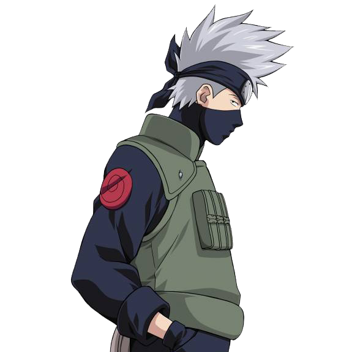

Какаши Хатаке (яп. はたけ カカシ Хатакэ Какащи) — шиноби Скрытого Листа из клана Хатаке. Более известный как Какаши Шарингана (яп. 写輪眼のカカシ, Щаринган но Какащи), он является одним из самых талантливых ниндзя Конохи, к кому регулярно обращаются за советом или просят лидерства, несмотря на его личную нелюбовь к ответственности. Своих учеников из Команды 7 Какаши учит важности командной работы — урока, что он получил вместе с Шаринганом от своего друга детства, Обито Учихи. После окончания Четвёртой Мировой Войны Шиноби Какаши становится Шестым Хокаге Конохи (яп. 六代目火影, Рокудаймэ Хокаге; Буквальное значение: Шестая Тень Огня).